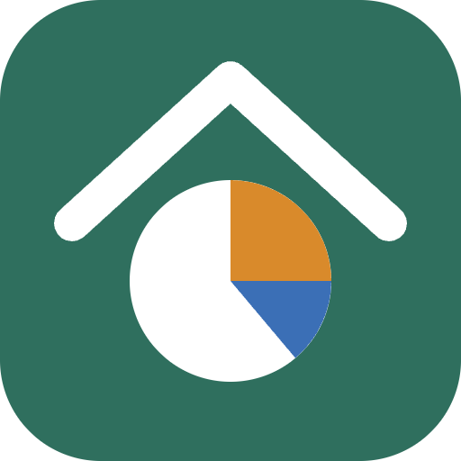

Spese, quote e vendita di immobili in comproprietà: chi ha pagato, chi deve soldi a chi e come dividere il prezzo di vendita tra i proprietari.
Nota: i calcoli sono indicativi e non sono consulenza legale, fiscale o professionale.
Italiano · English · Français · Deutsch · Español · Português · Tutte / All
Il titolare del trattamento è Lorenzo Concas (sviluppatore indipendente). Per qualsiasi richiesta sulla privacy puoi scrivere a lore.appstore@outlook.com.
Se usi l'app senza accedere, case, spese e preferenze sono salvate solo nel browser o sul dispositivo (archiviazione locale) e non ci vengono inviate. Cancellare i dati del sito dal browser, o disinstallare l'app, li elimina.
Per fornirti la sincronizzazione tra dispositivi e la condivisione delle case (esecuzione del servizio richiesto, art. 6(1)(b) GDPR) e per tenere il servizio sicuro (legittimo interesse, art. 6(1)(f)). Non facciamo profilazione, pubblicità o analisi statistiche, e non vendiamo i dati.
Google può trattare dati anche fuori dallo Spazio economico europeo, con le garanzie previste dalla normativa (clausole contrattuali tipo o Data Privacy Framework).
L'app non usa cookie di tracciamento né strumenti di analisi. Salva sul dispositivo solo ciò che serve a funzionare: lingua, tema, sezioni aperte o chiuse, sessione di accesso e, senza accesso, i tuoi dati.
Fino a quando non elimini la casa o l'account. Eliminando l'account, le tue case, anche condivise, e le tue richieste di accesso vengono cancellate subito e vieni rimosso dalle case altrui. Eventuali copie tecniche gestite da Google scompaiono secondo i suoi tempi.
Puoi chiedere accesso, rettifica, cancellazione, limitazione, portabilità e opposizione. Dentro l'app puoi esportare i tuoi dati (file JSON) ed eliminare l'account da Case → Account e privacy. Per tutto il resto scrivi a lore.appstore@outlook.com. Hai anche il diritto di presentare reclamo al Garante per la protezione dei dati personali (garanteprivacy.it) o all'autorità del tuo Paese.
Se inserisci nomi o email di altre persone (comproprietari, invitati), assicurati di poterlo fare. Chi riceve un invito può chiedere di essere rimosso scrivendoci o abbandonando la casa dall'app.
L'app non è rivolta a minori di 14 anni.
I calcoli sono indicativi e non sono consulenza legale, fiscale o professionale: vanno sempre ricontrollati.
Se questa informativa cambia, aggiorniamo la data qui sopra; per i cambiamenti importanti lo segnaliamo anche nell'app.
Ultimo aggiornamento: 10 novembre 2026
The data controller is Lorenzo Concas (independent developer). For any privacy request, write to lore.appstore@outlook.com.
If you use the app without signing in, houses, expenses and preferences are saved only in your browser or on your device (local storage) and are not sent to us. Clearing the site data in your browser, or uninstalling the app, deletes them.
To provide syncing across devices and house sharing (performance of the service you asked for, Art. 6(1)(b) GDPR) and to keep the service secure (legitimate interest, Art. 6(1)(f)). We do not profile you, show ads or run analytics, and we do not sell data.
Google may process data outside the European Economic Area, with the safeguards required by law (standard contractual clauses or the Data Privacy Framework).
The app uses no tracking cookies or analytics tools. It stores on your device only what it needs to work: language, theme, open or closed sections, your sign-in session and, if you are not signed in, your data.
Until you delete the house or the account. When you delete the account, your houses (including shared ones) and your access requests are erased immediately and you are removed from other people's houses. Any technical copies kept by Google disappear on its own schedule.
You can ask for access, rectification, erasure, restriction, portability and objection. In the app you can export your data (JSON file) and delete your account from Houses → Account and privacy. For anything else write to lore.appstore@outlook.com. You also have the right to lodge a complaint with your data protection authority (in Italy, the Garante per la protezione dei dati personali, garanteprivacy.it).
If you enter names or emails of other people (co-owners, invitees), make sure you are allowed to. Anyone you invite can ask to be removed by writing to us or by leaving the house in the app.
The app is not aimed at children under 14.
The calculations are indicative and are not legal, tax or professional advice: always double-check them.
If this policy changes we update the date above; for important changes we also tell you in the app.
Last updated: 10 November 2026
Le responsable du traitement est Lorenzo Concas (développeur indépendant). Pour toute demande relative à la vie privée, écrivez à lore.appstore@outlook.com.
Si vous utilisez l'app sans vous connecter, les maisons, dépenses et préférences sont enregistrées uniquement dans votre navigateur ou sur votre appareil (stockage local) et ne nous sont pas envoyées. Effacer les données du site dans le navigateur, ou désinstaller l'app, les supprime.
Pour fournir la synchronisation entre appareils et le partage des maisons (exécution du service demandé, art. 6(1)(b) RGPD) et pour garder le service sûr (intérêt légitime, art. 6(1)(f)). Nous ne faisons ni profilage, ni publicité, ni statistiques, et nous ne vendons pas les données.
Google peut traiter des données hors de l'Espace économique européen, avec les garanties prévues par la loi (clauses contractuelles types ou Data Privacy Framework).
L'app n'utilise ni cookies de suivi ni outils d'analyse. Elle ne conserve sur l'appareil que ce qui est nécessaire : langue, thème, sections ouvertes ou fermées, session de connexion et, sans connexion, vos données.
Jusqu'à ce que vous supprimiez la maison ou le compte. En supprimant le compte, vos maisons (même partagées) et vos demandes d'accès sont effacées immédiatement et vous êtes retiré des maisons des autres. Les éventuelles copies techniques gérées par Google disparaissent selon ses délais.
Vous pouvez demander l'accès, la rectification, l'effacement, la limitation, la portabilité et vous opposer au traitement. Dans l'app vous pouvez exporter vos données (fichier JSON) et supprimer votre compte depuis Maisons → Compte et confidentialité. Pour le reste, écrivez à lore.appstore@outlook.com. Vous pouvez aussi introduire une réclamation auprès de l'autorité de protection des données de votre pays (en France, la CNIL ; en Italie, le Garante, garanteprivacy.it).
Si vous saisissez des noms ou e-mails d'autres personnes (copropriétaires, invités), assurez-vous d'y être autorisé. Une personne invitée peut demander à être retirée en nous écrivant ou en quittant la maison depuis l'app.
L'app ne s'adresse pas aux enfants de moins de 14 ans.
Les calculs sont indicatifs et ne constituent pas un conseil juridique, fiscal ou professionnel : vérifiez-les toujours.
Si cette politique change, nous mettons à jour la date ci-dessus ; pour les changements importants, nous vous prévenons aussi dans l'app.
Dernière mise à jour : 10 novembre 2026
Verantwortlicher ist Lorenzo Concas (unabhängiger Entwickler). Für Datenschutzanfragen schreibe an lore.appstore@outlook.com.
Wenn du die App ohne Anmeldung nutzt, werden Häuser, Ausgaben und Einstellungen nur in deinem Browser oder auf deinem Gerät gespeichert (lokaler Speicher) und nicht an uns gesendet. Löschst du die Website-Daten im Browser oder deinstallierst die App, sind sie weg.
Um die Synchronisierung zwischen Geräten und das Teilen von Häusern bereitzustellen (Erfüllung des gewünschten Dienstes, Art. 6 Abs. 1 lit. b DSGVO) und den Dienst sicher zu halten (berechtigtes Interesse, Art. 6 Abs. 1 lit. f). Wir erstellen keine Profile, zeigen keine Werbung, nutzen keine Analysen und verkaufen keine Daten.
Google kann Daten auch außerhalb des Europäischen Wirtschaftsraums verarbeiten, mit den gesetzlich vorgesehenen Garantien (Standardvertragsklauseln oder Data Privacy Framework).
Die App verwendet keine Tracking-Cookies und keine Analysewerkzeuge. Sie speichert auf deinem Gerät nur, was sie zum Funktionieren braucht: Sprache, Design, geöffnete oder geschlossene Bereiche, die Anmeldesitzung und, ohne Anmeldung, deine Daten.
Bis du das Haus oder das Konto löschst. Beim Löschen des Kontos werden deine Häuser (auch geteilte) und deine Zugriffsanfragen sofort gelöscht, und du wirst aus den Häusern anderer entfernt. Eventuelle technische Kopien bei Google verschwinden nach dessen Fristen.
Du kannst Auskunft, Berichtigung, Löschung, Einschränkung, Übertragbarkeit und Widerspruch verlangen. In der App kannst du deine Daten exportieren (JSON-Datei) und dein Konto löschen, unter Häuser → Konto und Datenschutz. Für alles andere schreibe an lore.appstore@outlook.com. Du hast außerdem das Recht, dich bei deiner Datenschutzbehörde zu beschweren (in Italien beim Garante, garanteprivacy.it).
Wenn du Namen oder E-Mails anderer Personen (Miteigentümer, Eingeladene) eingibst, stelle sicher, dass du das darfst. Eingeladene können ihre Entfernung verlangen, indem sie uns schreiben oder das Haus in der App verlassen.
Die App richtet sich nicht an Kinder unter 14 Jahren.
Die Berechnungen sind unverbindlich und keine Rechts-, Steuer- oder sonstige Fachberatung: Prüfe sie immer nach.
Ändert sich diese Erklärung, aktualisieren wir das Datum oben; bei wichtigen Änderungen informieren wir dich auch in der App.
Zuletzt aktualisiert: 10. November 2026
El responsable del tratamiento es Lorenzo Concas (desarrollador independiente). Para cualquier consulta de privacidad, escribe a lore.appstore@outlook.com.
Si usas la app sin iniciar sesión, las casas, los gastos y las preferencias se guardan solo en tu navegador o dispositivo (almacenamiento local) y no se nos envían. Borrar los datos del sitio en el navegador, o desinstalar la app, los elimina.
Para ofrecerte la sincronización entre dispositivos y el uso compartido de casas (ejecución del servicio solicitado, art. 6.1.b RGPD) y para mantener el servicio seguro (interés legítimo, art. 6.1.f). No elaboramos perfiles, no mostramos publicidad, no hacemos analítica y no vendemos datos.
Google puede tratar datos fuera del Espacio Económico Europeo, con las garantías previstas por la ley (cláusulas contractuales tipo o Data Privacy Framework).
La app no usa cookies de seguimiento ni herramientas de analítica. Guarda en tu dispositivo solo lo necesario para funcionar: idioma, tema, secciones abiertas o cerradas, la sesión y, sin iniciar sesión, tus datos.
Hasta que elimines la casa o la cuenta. Al eliminar la cuenta, tus casas (también las compartidas) y tus solicitudes de acceso se borran de inmediato y se te quita de las casas de otros. Las posibles copias técnicas de Google desaparecen según sus plazos.
Puedes solicitar acceso, rectificación, supresión, limitación, portabilidad y oposición. En la app puedes exportar tus datos (archivo JSON) y eliminar tu cuenta desde Casas → Cuenta y privacidad. Para cualquier otra cosa escribe a lore.appstore@outlook.com. También puedes presentar una reclamación ante tu autoridad de protección de datos (en España, la AEPD; en Italia, el Garante, garanteprivacy.it).
Si introduces nombres o correos de otras personas (copropietarios, invitados), asegúrate de poder hacerlo. Quien reciba una invitación puede pedir que lo quitemos escribiéndonos o abandonando la casa desde la app.
La app no está dirigida a menores de 14 años.
Los cálculos son orientativos y no constituyen asesoramiento jurídico, fiscal ni profesional: compruébalos siempre.
Si esta política cambia, actualizamos la fecha de arriba; en los cambios importantes te avisamos también en la app.
Última actualización: 10 de noviembre de 2026
O responsável pelo tratamento é Lorenzo Concas (programador independente). Para qualquer pedido sobre privacidade, escreve para lore.appstore@outlook.com.
Se usares a app sem iniciar sessão, as casas, as despesas e as preferências ficam guardadas apenas no teu navegador ou dispositivo (armazenamento local) e não nos são enviadas. Apagar os dados do site no navegador, ou desinstalar a app, elimina-os.
Para te oferecer a sincronização entre dispositivos e a partilha de casas (execução do serviço pedido, art. 6.º, n.º 1, al. b) do RGPD) e para manter o serviço seguro (interesse legítimo, art. 6.º, n.º 1, al. f). Não fazemos perfis, não mostramos publicidade, não fazemos análises e não vendemos dados.
O Google pode tratar dados fora do Espaço Económico Europeu, com as garantias previstas na lei (cláusulas contratuais-tipo ou Data Privacy Framework).
A app não usa cookies de rastreamento nem ferramentas de análise. Guarda no dispositivo apenas o necessário para funcionar: idioma, tema, secções abertas ou fechadas, a sessão e, sem iniciar sessão, os teus dados.
Até eliminares a casa ou a conta. Ao eliminar a conta, as tuas casas (também as partilhadas) e os teus pedidos de acesso são apagados de imediato e és removido das casas de outros. As eventuais cópias técnicas do Google desaparecem segundo os prazos dele.
Podes pedir acesso, retificação, apagamento, limitação, portabilidade e opor-te ao tratamento. Na app podes exportar os teus dados (ficheiro JSON) e eliminar a conta em Casas → Conta e privacidade. Para o resto escreve para lore.appstore@outlook.com. Tens também o direito de apresentar reclamação à autoridade de proteção de dados (em Portugal, a CNPD; em Itália, o Garante, garanteprivacy.it).
Se introduzires nomes ou emails de outras pessoas (coproprietários, convidados), confirma que o podes fazer. Quem receber um convite pode pedir para ser removido escrevendo-nos ou abandonando a casa na app.
A app não se destina a menores de 14 anos.
Os cálculos são indicativos e não constituem aconselhamento jurídico, fiscal ou profissional: confirma-os sempre.
Se esta política mudar, atualizamos a data acima; nas alterações importantes avisamos também na app.
Última atualização: 10 de novembro de 2026
Per assistenza o domande relative all'app Spese Immobili, puoi contattarci via email all'indirizzo: lore.appstore@outlook.com.
Risponderemo alle tue richieste il prima possibile.
For help or questions regarding Spese Immobili, please contact us by email at: lore.appstore@outlook.com.
We will reply to your request as soon as possible.